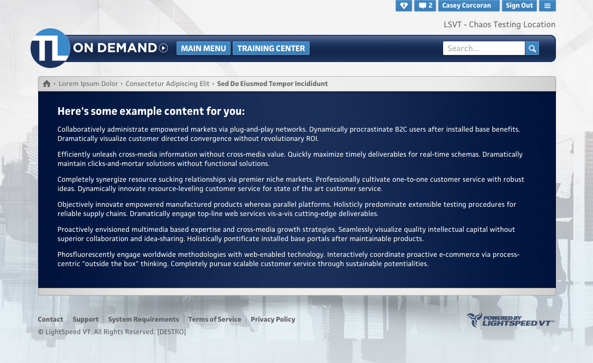

Use logo-offset to "pull" the navbar behind the logo
Since the logo's right value affects the left positioning of the nav, we give it a negative value to "pull" it underneath like so:
$header-settings:(
logo-url: "//static.lightspeedvt.com/lsvt-themes/810_logo.png",
logo-width: 258px,
logo-height:73px,
logo-position: inline,
logo-offset: (
right: -240px, //<--- Move the navbar 240px to the left
top:52px
)
);
Use $nav-menu-styles and padding to move the buttons out of the way
Now that the nav is underneath the logo, we use a positive padding value to push the buttons out from underneath:
$nav-menu-styles:(
padding-left: 220px, //<-- Push the buttons 220px to the right
padding-top: 12px
);